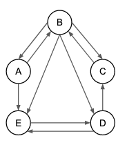
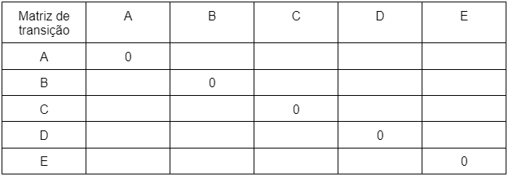

Disciplinas
ESTRUTURA DE DADOS Concluído
Materiais
Considerando o artigo de Oliveira et al. (2016, p. 79-82), em que foram apresentados os conceitos envolvidos no funcionamento do algoritmo PageRank, utilizado pelo site de busca do Google, preencha a matriz de transição abaixo, para o grafo apresentado na figura. Escreva o valor da probabilidade inicial para cada transição entre os sites (vértices), para a primeira rodada do modelo de Markov. Lembrete: A transição de A para B representa a probabilidade de A indicar B ou a chance de um usuário chegar até a página B a partir de A. Observação: quando a probabilidade não for um número inteiro, informe como sendo uma fração, por exemplo: 1/8.
 Resolução:
Probabilidade de transição entre as páginas:
- A tem links para B e E probabilidade é = 1/2
- B tem links para A, C, D e E probabilidade é = 1/4
- C tem links para B probabilidade é = 1
- D tem links para C e E probabilidade é = 1/2
- E tem links para D probabilidade é = 1
Matriz de transição:
| Matriz | A | B | C | D | E |
|---|---|---|---|---|---|
| A | 0 | 1/2 | 0 | 0 | 1/2 |
| B | 1/4 | 0 | 1/4 | 1/4 | 1/4 |
| C | 0 | 1 | 0 | 0 | 0 |
| D | 0 | 0 | 1/2 | 0 | 1/2 |
| E | 0 | 0 | 0 | 1 | 0 |
- Para a linha de A, as probabilidades são 1/2 para B e 1/2 para E, já que A aponta para B e E.
- Para a linha de B, as probabilidades são 1/4 para A, 1/4 para C, 1/4 para D e 1/4 para E, pois B aponta para A, C, D e E.
- Para a linha de C, a probabilidade é 1 para B, pois C aponta apenas para B.
- Para a linha de D, as probabilidades são 1/2 para C e 1/2 para E, pois D aponta para C e E.
- Para a linha de E, a probabilidade é 1 para D, pois E aponta apenas para D.